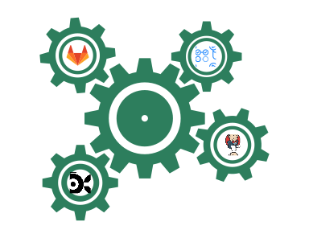

<div class="w-full">
  <div class="px-6 lg:px-10 max-w-7xl m-auto">
    <div class="py-6 px-6 lg:px-10 rounded-xl bg-[#f1fbff] pb-10 mt-6">
      <div>
        <div class="text-2xl lg:text-3xl font-semibold mb-6">
          Works with your dev stack
        </div>

        <div class="flex flex-col-reverse lg:grid grid-cols-10">
          <ul class="text-gray-500 text-lg col-span-5 lg:pr-6 pt-8 lg:pt-0 ml-4 list-disc">
            <li class="pb-2">Earthly Satellites – our remote build runners – integrates seamlessly with any CI. Get the benefits of Earthly Cloud on top of your CI/CD platform</li>
            <li class="pb-2">Works with Jenkins, GitHub Actions, CircleCI, GitLab CI/CD, AWS CodeBuild, Google Cloud Build, and more</li>
            <li class="pb-2">Compatible with every language, framework, and build tool</li>
            <li>If it runs on Linux, it runs on Earthly</li>
          </ul>

          
        </div>
      </div>
    </div>
  </div>
</div>
